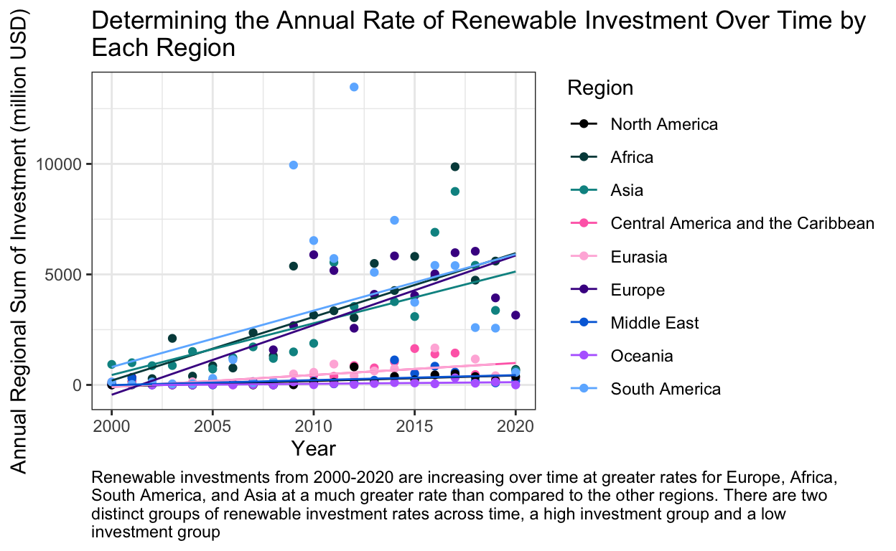

What is the global trend of regional renewable energy investment over time?
Implementation of renewable energy into electric grids around the world will be key to curbing the effects of climate change. Currently, three quarters of global greenhouse gas emissions result from fossil fuel energy production (Ritchie, Roser, 2020). As put by the International Renewable Energy Agency (IRENA), meeting international climate and development objectives will require a massive re-allocation of capital toward low-carbon technologies, including renewables, and the mobilization of all available capital sources. In the past, renewable energy technologies such as solar and wind have been expensive forms of generating electricity but, over the last ten years there has been a steep decline in their costs. From 2009 to 2019 the price of electricity from solar power has dropped 89% and the wind has dropped 70% (Roser, 2020). It might seem obvious that renewable portfolios have been growing in recent years as governments and politicians advertise, however does data actually support this? How are investments in renewable technologies changing over time? How does this compare to investment in non-renewable energy?
As climate change becomes an ever more present and increasing threat, detecting these trends can tell us if the world is on the right track to reducing carbon emissions from energy generation. IRENA dives deep into these questions in its report, Global Landscape of Renewable Energy Finance 2020 for the time period of 2013-2018. The IRENA report compares investment to climate goals like the Paris Agreement and makes recommendations on how these goals can be met. It also discusses the sources of the capital for energy projects and dives into off-grid renewable finance. The data used for the analysis in this blog post is from IRENA and the Climate Policy Initiative (CPI) and covers the time period of 2000-2020.
This blog post will take a more streamlined look at the general investment trend of global regions across time with linear regression models. Using a significance level of 0.05, I aim to detect whether the results from the models are statistically significant. This post is by no means a comprehensive study, however it will provide some quick insights.
Data
IRENA provides the data used in its 2020 finance report available for download from its website in an excel file format. To accompany the data, IRENA also posts a methodology document that discusses the sources of the data and how its analysis was conducted. According to the methodology report, the data used in this blog post can be, freely, used, shared, copied, reproduced, printed and/or stored. It should be noted that all the data from my analysis in this post is from IRENA and they hold the copyright for it.
Financial data can be challenging to acquire and can cause some misclassifications of recipients however, IRENA has standardized this process to the greatest extent possible for this data. Private investment data can be particularly challenging to find and this information was primarily taken from the Bloomberg New Energy Finance database by IRENA. So while the data used in this analysis may not be comprehensive for all financial investment data, it is likely some of the most comprehensive that is freely available. The reported investment data is conservative according to the methodologies provided by IRENA to prevent double-counts as they state under-reporting of renewable investments is preferred to over-reporting. The methodology report also provides detailed information about data sources, regional breakdowns, and more. The IRENA 2020 report and its methodologies are fully referenced below.
The raw data from IRENA is broken down by individual project investments in renewable and non-renewable energy sources with the amount of the investment in million USD. For each individual investment there is a plethora of data available including the year, country, region, donor, technology, and more. The time frame of data available from this data is from 2000-2020 This blog post will use annualized totals of investment for each region and therefore does not have a seasonal component. The countries represented in regional breakdowns were not determined by the author of this post and is directly embedded from the IRENA data.
Show code
# Make file path for the data
fp <- here("_posts/2021-11-23-detecting-trends-in-renewable-energy-investment/data/IRENA_RE_Public_Investment_July2021.xlsx")
# Read in the data using the readxl package
fin_energy <- read_excel(fp)
Show code
# Clean the data to remove fields that are not needed
fin_energy <- fin_energy %>%
clean_names()
# Remove unnecessary columns and the "multilateral" region
fin_energy <- fin_energy %>%
select(iso_code:region, year:technology, amount_2019_usd_million) %>%
filter(region != "Multilateral")
Show code
# Separate the data into the renewable and non-renewable investments
# The category section is kept to rejoin the data later to differentiate easily in a graph
renewable_fin <- fin_energy %>%
filter(category == "Renewables") %>%
group_by(country_area, region, category, year) %>%
summarise(country_sum = sum(amount_2019_usd_million))
non_renewable_fin <- fin_energy %>%
filter(category =="Non-renewables") %>%
group_by(country_area, region, category, year) %>%
summarise(country_sum = sum(amount_2019_usd_million))
Show code
# Make data frame for renewables for by region
region_renewable_fin <- renewable_fin %>%
group_by(region, category, year) %>%
summarise(region_sum = sum(country_sum))
# Make data frame for non-renewables for by region
region_non_renewable_fin <- non_renewable_fin %>%
group_by(region, category, year) %>%
summarise(region_sum = sum(country_sum))
# Make a data frame of the regional summations for graphing purposes later
full_region_fin <- full_join(x = region_renewable_fin,
y = region_non_renewable_fin)
Analysis Plan
First, a simple static time series model will explore the trend of the total annual amount invested in renewable energy by region across time. Regions are broken into Africa, Asia, Central America and the Caribbean, Eurasia, Europe, Middle East, Oceania, and South America. By running this simple model I aim to get a quick glimpse into the global trend of renewable investment over time, if one exists. This assumes that only the immediate year in question has an effect on the quantity of investment. This will then be compared to the trend in non-renewable energy source investment over the same time period. As previously mentioned, a significance level of 0.05 will be used to determine statistical significance. The null hypothesis for this first regression is that there is no relationship of renewable energy investment over time.
Second, a more complex time series regression model will be made where we take the simple model and break it up by regional heterogeneity to produce an interaction regression model. The first trend model provides a quick insight into how the world is investing as a whole based on regional sums for each year. However, with agreements like The Paris Agreement we know it will take each countrys and regions participation to minimize and eventually reverse the effects of climate change. With this in mind, the first regression model hides that certain regions are committing greater investments than other regions. If regions are truly committed to curbing climate change the second regression model will show an overall positive trend. This evaluation will serve as a litmus test to see regional commitment to global climate agreements. The same significance level will be used to test the null hypothesis that within each region there is no change of renewable investment over time. Finally, regional renewable trends will then be compared to their non-renewable counterparts.
Results
Simple Renewable Investment Trend Model
Below is the result of the regression model that tests the effect of year on renewable investment. The output below is from the summary() function, which quickly provides summary statistics in R.
Show code
Call:
lm(formula = region_sum ~ year, data = region_renewable_fin)
Residuals:
Min 1Q Median 3Q Max
-2905.6 -1271.5 -523.4 486.5 11707.5
Coefficients:
Estimate Std. Error t value Pr(>|t|)
(Intercept) -283692.95 53418.15 -5.311 3.13e-07 ***
year 141.88 26.58 5.339 2.73e-07 ***
---
Signif. codes: 0 '***' 0.001 '**' 0.01 '*' 0.05 '.' 0.1 ' ' 1
Residual standard error: 2167 on 184 degrees of freedom
Multiple R-squared: 0.1341, Adjusted R-squared: 0.1294
F-statistic: 28.5 on 1 and 184 DF, p-value: 2.735e-07Using the summary() function, we can quickly get some insights from our regression model. From the output above the coefficient estimate of the year tells us the annual rate of change of investment with each increasing year for global regions. From the regression model, this is 141.88 million USD. This tells us that, according to this model, with each passing year we are seeing a increase in renewable investment by 142,000,000 USD across each region per year. Overall this is a positive trend for renewable investments year over year.
From the summary() function the p-value is represented in the Coefficients section of the table under Pr(>|t|). The year coefficient has a p-value below 0.001 which allows rejection of a null hypothesis that there is no relationship between renewable investment sums across time with a significance level of 0.05. It should be noted that our R-squared value for this model is 0.13 however that is not important for this analysis as we are not focused on predicting outcomes of investment with high precision, but rather the overall trend from the year coefficient and its associated p-value.
With the information above, I believe we can answer the originally proposed question and say that there is a positive rate of investment in renewable projects over time. Now that we can see that there is a positive trend in renewable investments, lets compare that to non-renewables.
Simple Non-renewable Investment Trend Model
Show code
Call:
lm(formula = region_sum ~ year, data = region_non_renewable_fin)
Residuals:
Min 1Q Median 3Q Max
-2660.1 -1457.2 -796.8 -24.5 18677.7
Coefficients:
Estimate Std. Error t value Pr(>|t|)
(Intercept) -218612.31 77728.01 -2.813 0.00549 **
year 109.54 38.67 2.833 0.00518 **
---
Signif. codes: 0 '***' 0.001 '**' 0.01 '*' 0.05 '.' 0.1 ' ' 1
Residual standard error: 2974 on 170 degrees of freedom
Multiple R-squared: 0.04507, Adjusted R-squared: 0.03945
F-statistic: 8.023 on 1 and 170 DF, p-value: 0.005176From the summary() of this model, there is also a positive trend of non-renewable investment across regions. There is an annual increase in non-renewable investments by 109.54 million USD. With a p-value of 0.005 a null hypothesis can be rejected that there is no relationship between non-renewable investment over time with a significance level of 0.05.
According to these two simple models, there is a larger increase in renewable investments year over year compared to non-renewables but as the standard errors for the models overlap this is not conclusive and this blog post will not be pursuing this question. Below is a plot that compares renewable and non-renewable investments over time, along with their respective models.
Show code
simple_model_plot <- ggplot(data = full_region_fin,
aes(x = year,
y = region_sum,
color = category)) +
geom_point(alpha = 0.8) +
scale_color_manual(name = "Energy Type",
values = c("tan3", "darkgreen")) +
geom_line(data = augment(model_renew),
aes( y = .fitted),
color = "darkgreen") +
geom_line(data = augment(model_non_renew),
aes( y = .fitted),
color = "tan3") +
labs(caption = "Renewable investments from 2000-2020 are increasing at a rate of 141 million USD per year according to this model.\nNon-renewable invesments over the same time period are increasing at a rate of 110 million USD per year.",
title = "Comparing Investment Renewable and Non-Renewable Energy\nInvestment Across Regional Sums") +
xlab(label = "Year") +
ylab(label = "Annual Regional Sum of Investment (million USD)") +
theme_bw() +
theme(plot.caption = element_text(hjust = 0))
simple_model_plot

It can be observed from the graph that there has been significant investment in renewable (green) and non-renewable (tan) energy projects since the 2008 global recession. The plot illustrates just how much variance there is in investment totals across regions in each year. As discussed above, the plot shows that there is a larger investment rate in renewables year-over-year. As this data is only from the years 2000-2020 these investment trends do not reflect the historical investments in non-renewable energy sources. As this simple regression only looks at the trend over time I will now investigate how these investment trends compare across regions.
Regional Renewable Investment Trend Model
For this interaction regression model, the same summary() function is used to calculate coefficients and summary statistics for the interaction regression of time and region on annual renewable investment. While the summary() function is useful, its output can be quite messy with interaction models, so a table was made from the results to include the annual investment rates for different regions and their corresponding p-values. In the model the North American region was set as the base level of the regression. This was done because North America contains the United States, the country with the largest GDP in the world and therefore a significant marker to compare against other regions.
Show code
# Make levels for regions with North America as first to compare our region to the rest of the world
region_renewable_fin$region <- factor(region_renewable_fin$region, levels = c("North America", "Africa", "Asia", "Central America and the Caribbean", "Eurasia", "Europe", "Middle East", "Oceania", "South America"))
# Make the regional investment model
region_model <- lm(region_sum ~ year + region + region:year, data = region_renewable_fin)
region_renew_model_summary <- summary(region_model)
Show code
# Making the results a summary table
summary_renew_region_table <- data.frame(Region = c("North America",
"Africa",
"Asia",
"Central America and the Caribbean",
"Eurasia",
"Europe",
"Middle East",
"Oceania",
"South America"),
Renewable_Investment = c(region_renew_model_summary$coefficients[2,"Estimate"],
region_renew_model_summary$coefficients[2,"Estimate"] + region_renew_model_summary$coefficients[11,"Estimate"],
region_renew_model_summary$coefficients[2,"Estimate"] + region_renew_model_summary$coefficients[12,"Estimate"],
region_renew_model_summary$coefficients[2,"Estimate"] + region_renew_model_summary$coefficients[13,"Estimate"],
region_renew_model_summary$coefficients[2,"Estimate"] + region_renew_model_summary$coefficients[14,"Estimate"],
region_renew_model_summary$coefficients[2,"Estimate"] + region_renew_model_summary$coefficients[15,"Estimate"],
region_renew_model_summary$coefficients[2,"Estimate"] + region_renew_model_summary$coefficients[16,"Estimate"],
region_renew_model_summary$coefficients[2,"Estimate"] + region_renew_model_summary$coefficients[17,"Estimate"],
region_renew_model_summary$coefficients[2,"Estimate"] + region_renew_model_summary$coefficients[18,"Estimate"]),
p_value = c(region_renew_model_summary$coefficients[2,"Pr(>|t|)"],
region_renew_model_summary$coefficients[11,"Pr(>|t|)"],
region_renew_model_summary$coefficients[12,"Pr(>|t|)"],
region_renew_model_summary$coefficients[13,"Pr(>|t|)"],
region_renew_model_summary$coefficients[14,"Pr(>|t|)"],
region_renew_model_summary$coefficients[15,"Pr(>|t|)"],
region_renew_model_summary$coefficients[16,"Pr(>|t|)"],
region_renew_model_summary$coefficients[17,"Pr(>|t|)"],
region_renew_model_summary$coefficients[18,"Pr(>|t|)"])
) %>%
mutate(Renewable_Investment = round(Renewable_Investment, 2))
summary_renew_region_table %>%
kable(col.names = c("Region", "Renewable Investment per Year (million USD)", "p-value")) %>%
kable_styling(bootstrap_options = "striped",
full_width = FALSE,
latex_options = "HOLD_position")
| Region | Renewable Investment per Year (million USD) | p-value |
|---|---|---|
| North America | 24.76 | 0.6615318 |
| Africa | 288.09 | 0.0011902 |
| Asia | 234.07 | 0.0095686 |
| Central America and the Caribbean | 54.20 | 0.7128610 |
| Eurasia | 54.84 | 0.7173467 |
| Europe | 315.08 | 0.0003684 |
| Middle East | 22.61 | 0.9785519 |
| Oceania | 7.27 | 0.8400681 |
| South America | 255.03 | 0.0044462 |
From this table the annual investment rate of each region according to this linear regression interaction model is available. The regions with the two highest investment rates over time are Europe and Africa. Europe has widely been seen as a leader in renewable energy development so it is not surprising that it has a high rate. From the original data from IRENA, Africas renewable energy investment has been particularly high in hydropower throughout various countries. The regions with the two lowest investment rates over time are Oceania and the Middle East. Oceania is primarily made up of island nations with low populations so large investments in these technologies can be challenging. The Middle East produces large quantities of the worlds fossil fuels so its lack of investment is also not surprising.
The only regions with p-values below a significance level of 0.05 are Africa, Asia, Europe, and South America. Therefore, for these regions we can reject the null hypothesis that there is no relationship for the regions investment in renewables over time. Below is a plot that shows the regional model and the renewable investment rates over time separated by region.
Show code
# Plotting the regional model
regional_model_plot <- ggplot(data = region_renewable_fin,
aes(x = year, y = region_sum, color = region)) +
geom_point() +
geom_line(data = augment(region_model),
aes(y = .fitted)) +
scale_color_paletteer_d("colorBlindness::paletteMartin") +
labs(caption = "Renewable investments from 2000-2020 are increasing over time at greater rates for Europe, Africa,\nSouth America, and Asia at a much greater rate than compared to the other regions. This graph shows\nthere are two distinct groups of renewable investment rates across time, a high investment group and a\nlow investment group",
title = "Determining the Annual Rate of Renewable Investment Over Time by\nEach Region") +
xlab(label = "Year") +
ylab(label = "Annual Regional Sum of Investment (million USD)") +
theme_bw() +
theme(plot.caption = element_text(hjust = 0)) +
guides(color = guide_legend(title = "Region"))
regional_model_plot

Our graphic clearly defines two different annual investment rate categories for global regions, a high investment rate group and a low investment rate group. The high rate investment group contains Europe, Africa,South America, and Asia. The low rate of investment group contains North America, Central America and the Caribbean, Eurasia, the Middle East, and Oceania.
Based on the regional interaction regression model above, we are next going to do the same for non-renewable energy investment and will summarize both models into one output table with the renewables investment regression.
Show code
# Make levels for regions with North America as first to compare our region to the rest of the world
region_non_renewable_fin$region <- factor(region_non_renewable_fin$region, levels = c("North America", "Africa", "Asia", "Central America and the Caribbean", "Eurasia", "Europe", "Middle East", "Oceania", "South America"))
# Make the regional investment model
region_non_renew_model <- lm(region_sum ~ year + region + region:year, data = region_non_renewable_fin)
region_non_renew_model_summary <- summary(region_non_renew_model)
Show code
summary_investment_region_table <- data.frame(summary_renew_region_table,
Non_Renewable_Investment = c(region_non_renew_model_summary$coefficients[2,"Estimate"],
region_non_renew_model_summary$coefficients[2,"Estimate"] + region_non_renew_model_summary$coefficients[11,"Estimate"],
region_non_renew_model_summary$coefficients[2,"Estimate"] + region_non_renew_model_summary$coefficients[12,"Estimate"],
region_non_renew_model_summary$coefficients[2,"Estimate"] + region_non_renew_model_summary$coefficients[13,"Estimate"],
region_non_renew_model_summary$coefficients[2,"Estimate"] + region_non_renew_model_summary$coefficients[14,"Estimate"],
region_non_renew_model_summary$coefficients[2,"Estimate"] + region_non_renew_model_summary$coefficients[15,"Estimate"],
region_non_renew_model_summary$coefficients[2,"Estimate"] + region_non_renew_model_summary$coefficients[16,"Estimate"],
region_non_renew_model_summary$coefficients[2,"Estimate"] + region_non_renew_model_summary$coefficients[17,"Estimate"],
region_non_renew_model_summary$coefficients[2,"Estimate"] + region_non_renew_model_summary$coefficients[18,"Estimate"]),
Non_Renewable_p_value = c(region_non_renew_model_summary$coefficients[2,"Pr(>|t|)"],
region_non_renew_model_summary$coefficients[11,"Pr(>|t|)"],
region_non_renew_model_summary$coefficients[12,"Pr(>|t|)"],
region_non_renew_model_summary$coefficients[13,"Pr(>|t|)"],
region_non_renew_model_summary$coefficients[14,"Pr(>|t|)"],
region_non_renew_model_summary$coefficients[15,"Pr(>|t|)"],
region_non_renew_model_summary$coefficients[16,"Pr(>|t|)"],
region_non_renew_model_summary$coefficients[17,"Pr(>|t|)"],
region_non_renew_model_summary$coefficients[18,"Pr(>|t|)"])) %>%
mutate(Non_Renewable_Investment = round(Non_Renewable_Investment, 2))
Show code
summary_investment_region_table %>%
kable(col.names = c("Region",
"Renewable Investment per Year (million USD)",
"Renewable p-value",
"Non-renewable Investment per Year (million USD)",
"Non-renewable p-value")) %>%
kable_styling(bootstrap_options = "striped",
full_width = FALSE,
latex_options = "HOLD_position") %>%
column_spec(column = 1, width = "1in") %>%
column_spec(column = 2, width = "1.3in") %>%
column_spec(column = 3, width = "1in") %>%
column_spec(column = 4, width = "1.3in") %>%
column_spec(column = 5, width = "1in")
| Region | Renewable Investment per Year (million USD) | Renewable p-value | Non-renewable Investment per Year (million USD) | Non-renewable p-value |
|---|---|---|---|---|
| North America | 24.76 | 0.6615318 | 9.97 | 0.9456139 |
| Africa | 288.09 | 0.0011902 | 155.40 | 0.4086434 |
| Asia | 234.07 | 0.0095686 | 254.85 | 0.1649952 |
| Central America and the Caribbean | 54.20 | 0.7128610 | 6.05 | 0.9829376 |
| Eurasia | 54.84 | 0.7173467 | 96.44 | 0.6229642 |
| Europe | 315.08 | 0.0003684 | 81.26 | 0.6852117 |
| Middle East | 22.61 | 0.9785519 | 35.86 | 0.8897374 |
| Oceania | 7.27 | 0.8400681 | -0.56 | 0.9573164 |
| South America | 255.03 | 0.0044462 | 171.52 | 0.3588261 |
The above table allows for the comparison of the annual rates of renewable and non-renewable investment over time by each region and their corresponding p-values. The non-renewable regression model has no investment rate p-value below a significance level of 0.05. Therefore no non-renewable investment rate can be considered statistically significant. For renewables, the investment rates for Africa, Asia, Europe, and South America can be considered statistically significant as their p-values are below a significance level of 0.05.
Some interesting regional insights from this table however show that South America, Africa, and Asia are investing heavily in renewable and non-renewable energies over time. These regions have economies that are developing rapidly compared to other regions of the world and it is evident in these investment trends. According to the regression models, Europe has been investing the most in renewables compared to other regions year-over-year but not in non-renewables. However, as mentioned earlier no non-renewable investment rates can be considered statistically significant so it is difficult to comment on non-renewable trends as they may not exist.
To summarize, the world as a whole is investing more in renewable energy projects each year. However, the world is also investing more in non-renewable energy projects each year. By region, only the investment rates for Africa, Asia, Europe, and South America can be considered statistically significant as their p-values are below a significance level of 0.05. For other regions, the regression model fails to reject the null hypothesis that there is no relationship with investment in renewable projects over time.
Next Steps
This blog post and regression analysis is by no means a comprehensive look at financial investments over time by each region. It provides quick insights into how some regions are investing in renewable technologies at a greater rate over time compared to other regions. To dive further in this analysis, it would be interesting to normalize investment rates with the GDP of each region. One could also compare specific countries and the affect of the type of government on renewable investment energies. Another option would be to compare the investment rates of countries with rapidly developing economies compared to those who have had developed economies to see if there are any trends relevant. As noted before in this post there is a visual trend in the graphs where there is much greater investment into renewable and non-renewable projects after the 2008 recession so a deeper analysis could be done in this observation to see if it actually exists and, if it does, to try and figure out what has caused it.
References
IRENA, & CPI. (n.d.-a). Global Landscape of Renewable Energy Finance 2020. 88.
IRENA, & CPI. (n.d.-b). Global Landscape of Renewable Energy Finance 2020: Methodology. 16.
Ritchie, H., & Roser, M. (2020). Energy. Our World in Data. https://ourworldindata.org/renewable-energy
Roser, M. (n.d.). Why did renewables become so cheap so fast? Our World in Data. https://ourworldindata.org/cheap-renewables-growth